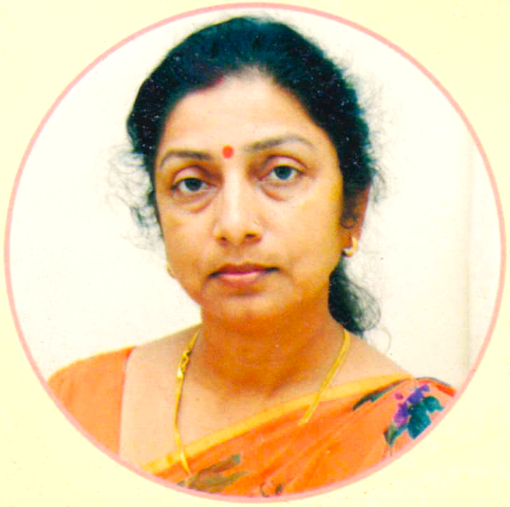
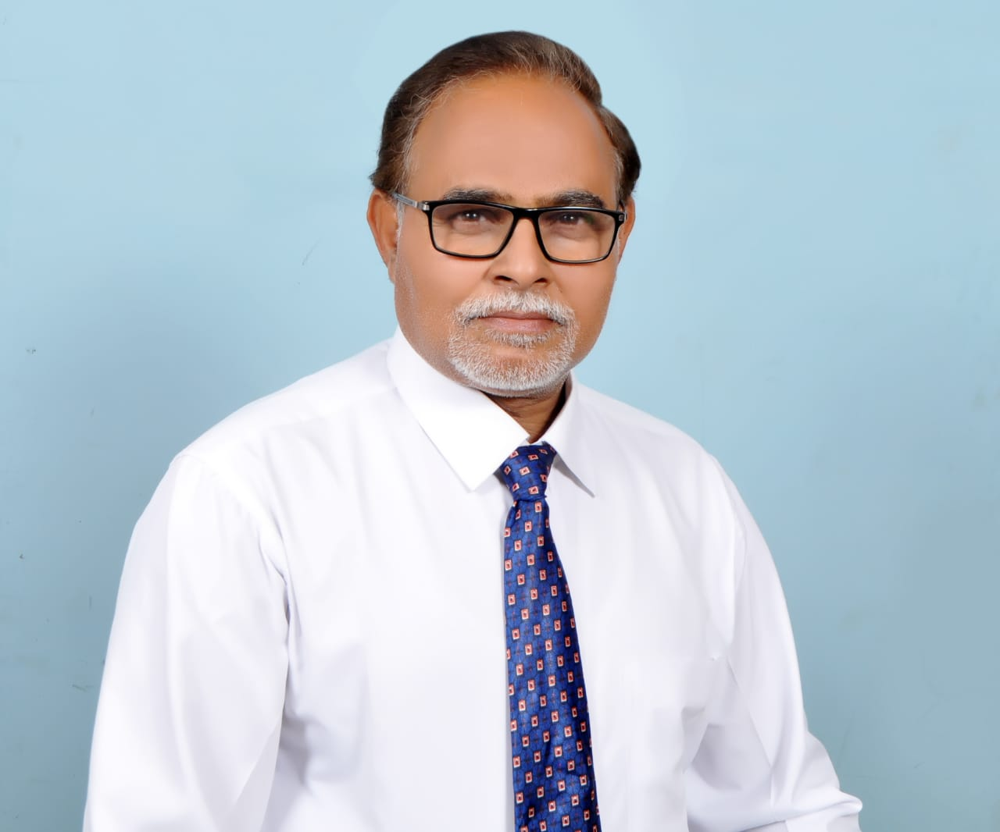

PRINCIPAL'S MESSAGE

It is through education that a child learns to face the challenges of life, yet educating the mind without educating the heart is no education at all. In our school we endeavor constantly to instill moral values and principles among students so that they develop into sensitive and responsible citizens. We shall continue with this commitment to the cause of education and the nurturing of impressionable minds of today to make their tomorrow bright and beautiful.
We are aiming to prepare our Children and students for a rapidly changing world by equipping them into critical thinking skills. Global Perspective and respect for core values of honesty, Loyalty and compassion developing these skills.challenges incl approach require perfectness in the them in the college
The Seeds that are sown in the hearts and minds of the students help them to germinate into the torchbearers of tomorrow as people who are accustomed to success.
Mrs. Geeta Bajpai
(Principal)
FOUNDER'S MESSAGE

Education is not just about the subjects that are learnt and taught in school. Becoming educated is not restricted to being in school and then in college, gathering certificates and feeling proud of oneself. It is a lifelong exercise that can be unbelievably exciting if only we wish to jump onto the train of experience and take a trip to every conceivable place on the earth. It is very much apparent that we live today in a world that is so very different from the one we grew up in, the one we were educated in. Change in today’s world is riding an accelerated pace and we need to pause and reflect it on the entire education system. I firmly believe that students must be taught how to think, not what to think.
I believe that good education must focus on all around development of our children having their talent sharping their communication skill & building up their confidence. This is done by in calculating Indian values & traditions through a number of co-curricular activities. This exposing them to our rich Indian culture.
Late Mr. Krishna Kumar Mishra
(Founder)
ABOUT US

Patriot Institution of Education was established in 1996 at the 'Nursery' stage to promote the heritage of Indian culture, social welfare, and the physical and mental progress of school-going children. In 1996-97, Patriot Institution of Education obtained recognition from the Basic Shiksha Adhikari, Unnao, to start primary education in response to the local citizens' demand, following the success and popularity of its primary education stage.
The institution is well-equipped with necessary amenities to conduct classes from Nursery to Intermediate, keeping in mind the needs of the local community and the welfare of society. Over the years, Patriot Institution has expanded its curriculum to include science and other prescribed subjects, recognized by the Madhyamik Shiksha Parishad, U.P. board Allahabad. Additionally, we are now proudly affiliated with the CBSE board, ensuring a high standard of education and a wide range of academic opportunities for our students.
In addition to academic excellence, Patriot Institution of Education places a strong emphasis on sports and extracurricular activities. Our students regularly participate in various sports events, fostering teamwork, discipline, and physical fitness. We also offer a range of clubs and activities, including music, art, and debate, to ensure holistic development and to nurture the diverse talents of our students.